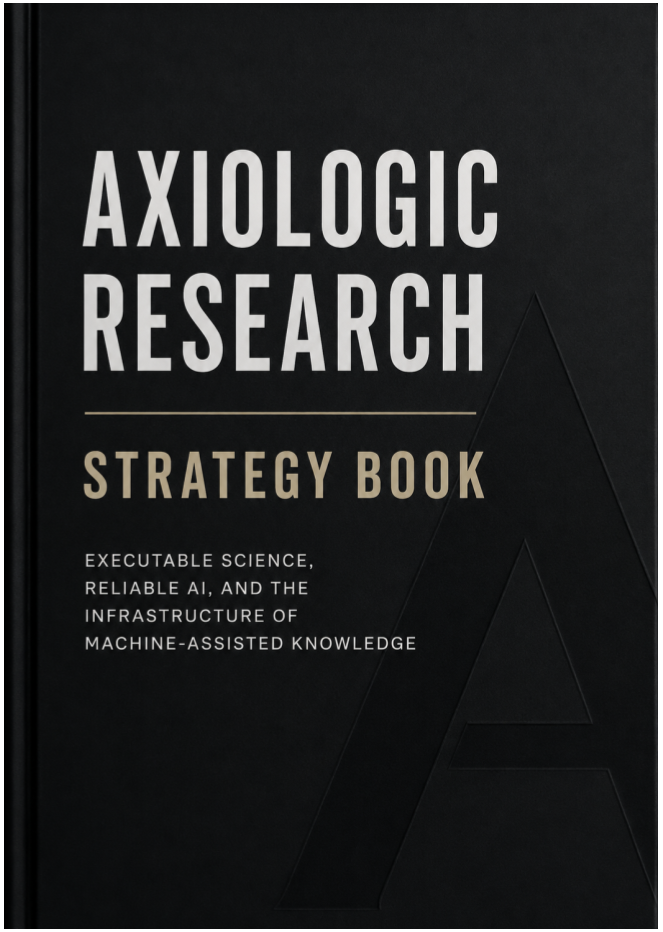

Technology · Axiologic Research Editions
Axiologic Research Strategy Book
Executable Science, Reliable AI, and the Infrastructure of Machine-Assisted Knowledge
A strategy becomes useful when its assumptions, dependencies and reasons for changing course remain visible.
A strategy designed to be revised
This book makes the current research position of Axiologic explicit: what the organisation believes about artificial intelligence, enterprise adoption and scientific automation; which technical assets can support that view; and where partners, evidence or changing conditions may alter the priorities. It is deliberately a maintained map rather than a fixed master plan.
The central wager is that a small research organisation can compensate for limited scale through architectural coherence and faster correction. AssistOS, governed agents, executable knowledge, research infrastructure and neuro-symbolic verification are treated as connected fronts whose value depends on shared evidence and reusable foundations.
Three strategic commitments
Make machine-assisted knowledge inspectable. Generated abundance matters only when claims, provenance, tests and decision rights can survive scrutiny.
Build infrastructure, not isolated demonstrations. Models, tools, evidence, permissions and human judgment need a durable operating environment.
Keep attractive ideas corrigible. The strategy distinguishes current capabilities from proposals and records where prototypes, markets or scientific results could invalidate an assumption.
The document is valuable not because it predicts one future, but because it makes the reasons for choosing among futures easier to inspect.
A public research instrument
This is both an organisational strategy and an example of the living research object it advocates. It is for research partners, funders, builders and institutions evaluating where reliable AI and executable science can meet concrete programmes of work.